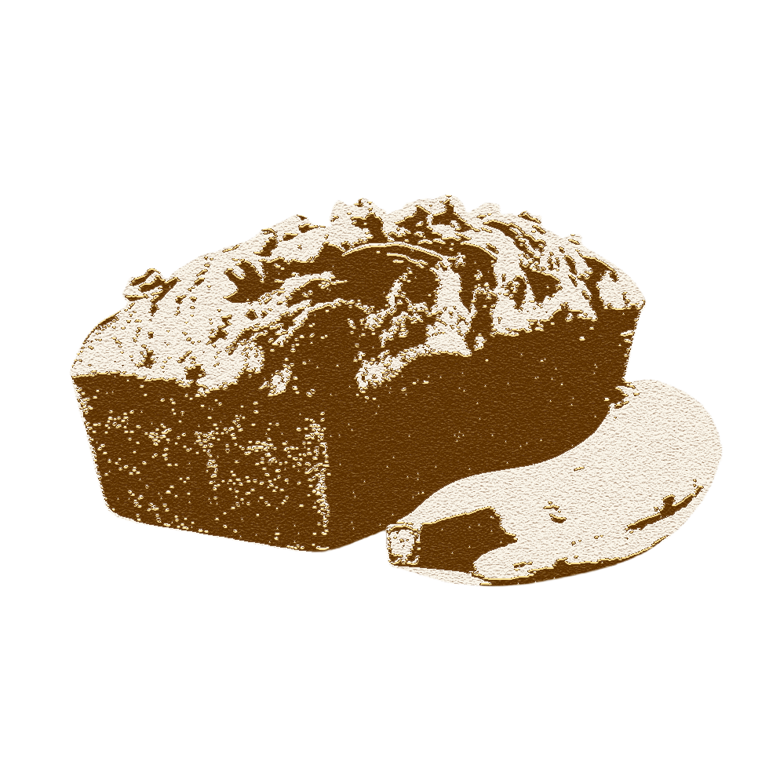

1
Adjust the oven rack to the lower third position and preheat the oven to 350°F (177°C). Lowering the oven rack prevents the top of your bread from browning too much, too soon. Grease a 9x5-inch loaf pan with nonstick spray. Set aside.
With its super-moist and buttery texture, banana and brown sugar flavors, soft crumb, and 1,000+ reviews, this is a delicious AND undeniably popular banana bread recipe.
↓
Adjust the oven rack to the lower third position and preheat the oven to 350°F (177°C). Lowering the oven rack prevents the top of your bread from browning too much, too soon. Grease a 9x5-inch loaf pan with nonstick spray. Set aside.
In a medium bowl, whisk the flour, baking soda, salt, and cinnamon together. Set aside.
In a large bowl using a handheld or stand mixer fitted with a paddle attachment, beat the butter and brown sugar together on medium-high speed until light and creamy, about 3 minutes. With the mixer running on medium speed, add the eggs one at a time, beating well after each addition. Scrape down the sides of the bowl as needed. Beat in the yogurt, vanilla, and mashed bananas until combined.
Add the dry ingredients into the wet ingredients and beat on low speed just until combined. Do not over-mix. Fold in the nuts/chocolate chips, if using. The batter should be thick.
Pour and spread the batter into the prepared baking pan. Bake for 60-65 minutes, making sure to loosely cover the pan with aluminum foil halfway through, to prevent the top from getting too brown.
The bread is done when a toothpick inserted in the center comes out clean with only a few small moist crumbs. Cool the bread in the pan set on a cooling rack for 1 hour.Remove the bread from the pan and cool it directly on the rack until ready to slice and serve.
